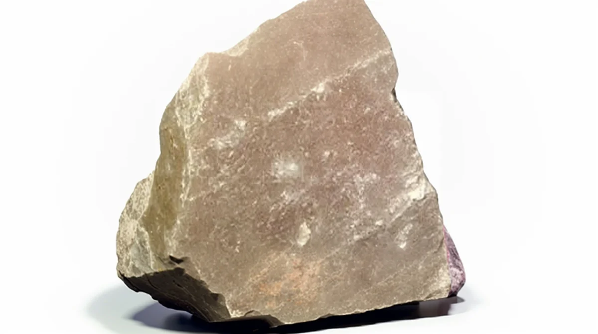
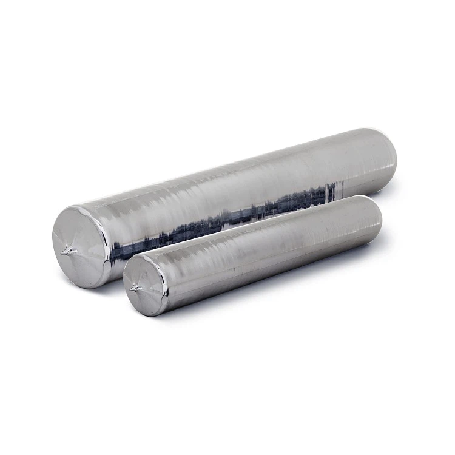
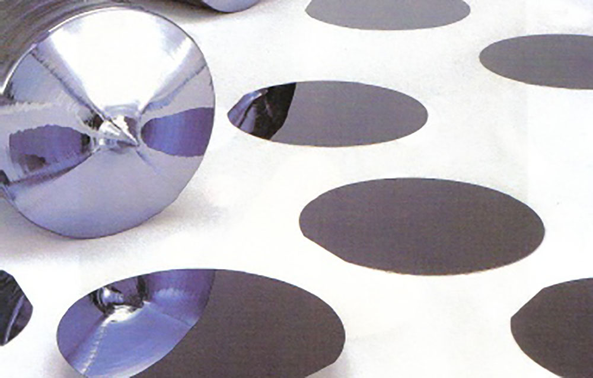
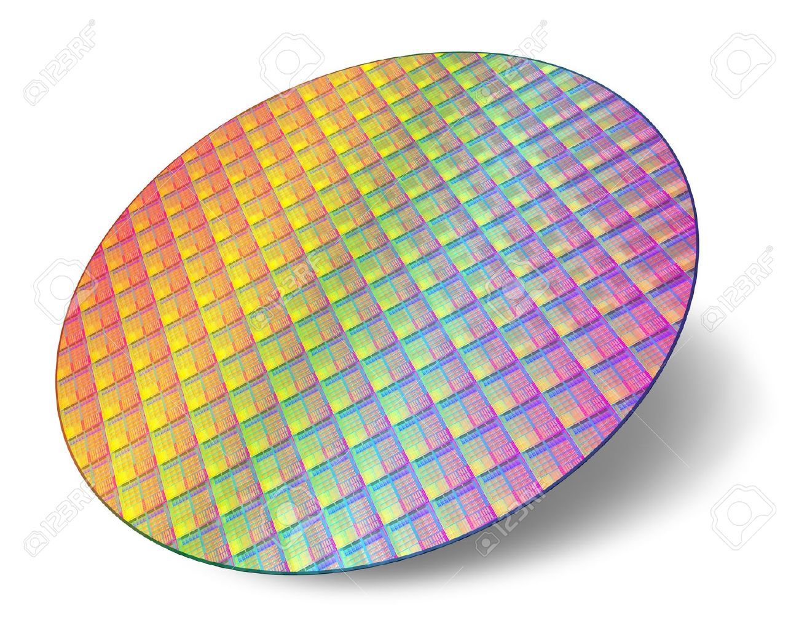
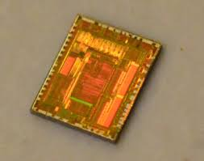

La conception d'un processeur
Il y a 5 étapes pricipales dans la conception d'un processeur :
- L'extraction des minerais de quartzite 
- Le raffinement de ce minerais pour former des lingots de silicium 
- La découpe de ces lingots pour former des fines plaquettes de silicium 
- La soudure et gravure de centaines puces de processeur sur la plaquette 
- La découpe de la plaquette pour obtenir les puces du processeur 
Lors du processus de gravure des CPU DIE sur la plaquette de silicium ce sont plus de 10 000 000 000 de transistors qui sont gravés par CPU DIE. Par plaquette 230 CPU DIE seront gravés ce qui fait un total de plusieurs billions de transistors pour une plaquette.
Ces plaquettes suivent un cycle de construction bien précis répétés des centaines de fois pour permettre la gravure de ces CPU DIE. Des vérifications sont réalisées à chaques étapes de ces cycles. Cependant, il arrive que des imperfections surviennent, c'est pour cela qu'un test final visant à retirer tout les DIE comportant trop de défauts pour être fonctionnel est fait en fin d'usine. Les autres DIE sont alors triés du plus au moin fonctionnel en fonction du nombre de défauts. Cela constitura les fameux tiers : intel core i3, i5, i7 et i9 ou ryzen 3,5,etc...